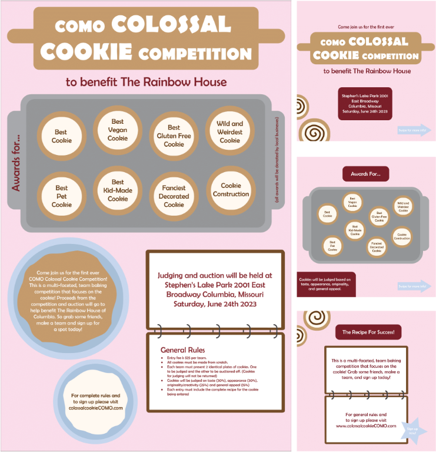

C# Rock, Paper Scissors Game
This program written in C# runs a rock, paper, scissors game through the terminal where the user can play rock, paper, scissors with the computer. This project acted as my final project in my course covering programming paradigms. The program includes the ability to load game statistics from a .csv file and display the leaderboard to users. The program asks users their name and saves their data to the file. This project showcases my ability to code in the C# language, use object oriented programming, read and save data to a file, and handle exceptions in a computer program.
Poster Advertisement
This project includes a poster and a series of social media posts intended to advertise a fictional event. I completed this project as an assignment in my graphic design course. Both the poster and the sequence of posts utilize theories of visual design and marketing, including color theory, visual hierarchy, and typography. This project highlights my ability to use Adobe Illustrator and my skill in graphic design and UI/UX design concepts.
Animated Advertisement
This is an animated video created through Adobe After Effects that uses various images edited with Adobe Photoshop. The video was made for an assignment I completed for one of my courses focused on digital media and design. The intent of the project was to create a short animated advertisement for a fictional game company to practice animation and digital branding. This project demonstrates my experience creating media for a digital platform that fits a certain brand. It also shows my abilities in animation, video editing, and photo editing.